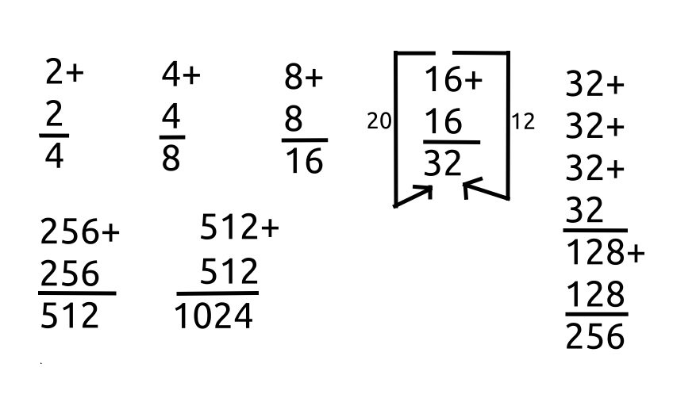

Addition
To add one number to another, you put one above, and one beneath the other.
To the right of each new number except the final add a plus sign (see image).
Below all numbers of an operation, add a line. This is, for writing addition vertically, the "equal" sign, because what is one side is equal to what is on the other.
For large numbers, write the numbers such that the ones on each row are matched up on one column (vertical), the tens on another, the hundreds on yet another, and so on. This allows you to more easily add the ones to the ones, the tens to the tens, the hundreds to the hundreds, and so on, such that you can combine the results as you go, or at the end, depending on which feels more fun.